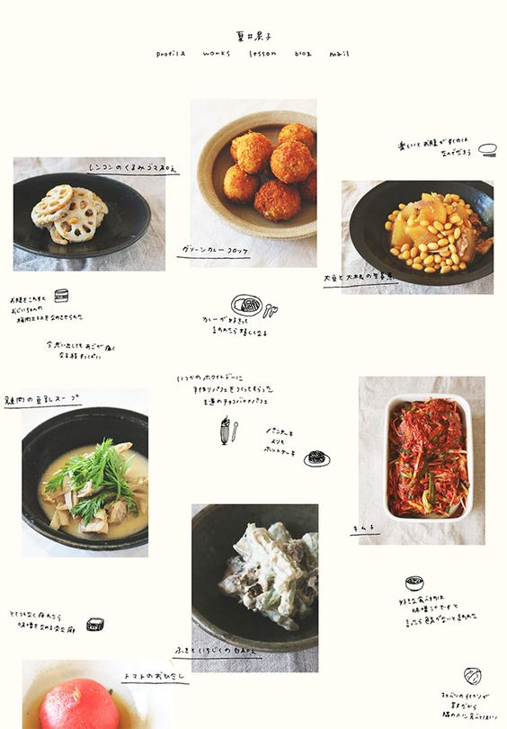
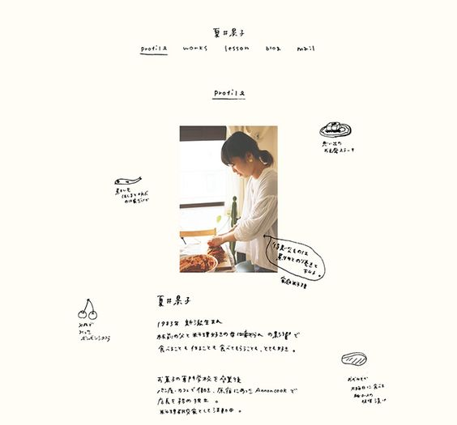

Week One
Prompt: What do you hope to achieve in this class by the end of the term? Are there special projects or technologies you’d like to see covered by the end of the term? Is there a site (or two) that gives you butterflies in your stomach? What is it?
Response: I've been planning to get more into web and ui/ux design, so I hope to learn as much as I can about the langauges and softwares we're going to use. I've always been afraid of coding/programming and I want to face my fears and even learn to enjoy it. I also hope to create at least one project that will enhance my portfolio. Animation is another topic I really like and I hope to learn how to use animations on websites.
A website I've always liked is Tablet Magazine's Website, done by Pentagram. It's clean but still evokes B&W newspapers, which I love!
Inspiring site of the week:  
Love how this website looks like a sketchbook page.
Week Two
Prompt: What are your initial thoughts on flex box vs grid? Are you drawn to one more than the other?
Response:
Week Three
Prompt:
Response:
Week Four
Prompt: Write about your project. What went well, what went not-so-well, what was your favourite part? What do you wish you knew before you started.
Response:
Week Five
Prompt: Compare the site you are redesigning to 2 similar sites. Consider their content hierarchy, attention to customer needs, ease of use. Write about your findings. You may use a SWOT analysis template(link). Response to Umoju Miller talk .
Response:
Week Six
Prompt:
Response:
Week Seven
Prompt: Write about your project. What went well, what went not-so-well, what was your favourite part? What do you wish you knew before you started.
Response:
Week Eight
Prompt: Write a Project 3 brief. What are your plans? Why have you choses your particular subject. What are three things you hope to improve/highlight with the new design? What interactions are you considering?
Response:
Week Nine
Prompt: What are the most important features of a good portfolio site? How can you showcase the work without upstaging it? Did you find any sites that used color in a convincing way? What kinds of interactions did you see? What about branding? In what ways is the work you do and who you are a commodity?
Response:
Week Ten
Prompt: Before the final, please write at least a few paragraphs on your design process and reasoning for the design decisions you made on your project.
Response: